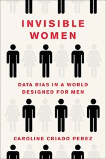
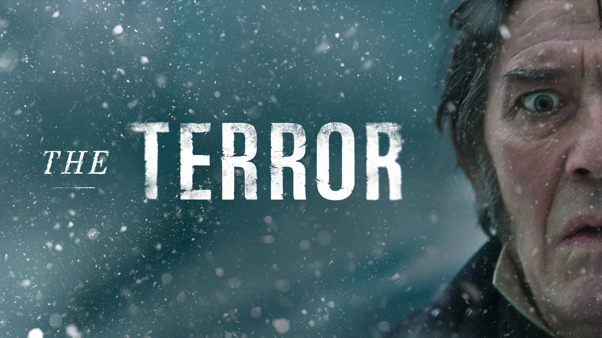
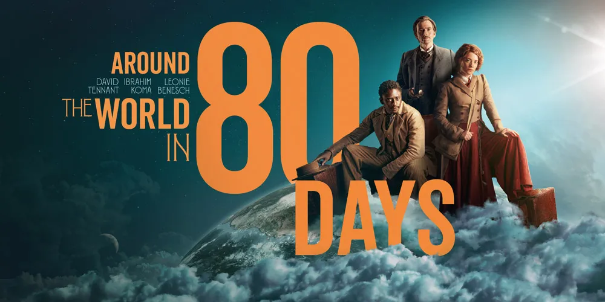

some of my favourite things
a non-exhaustive list of some things I enjoy, from a breadth of categories.
This webpage is created from a
list of markdown files, and updates are manually noted and written to an
 RSS feed.
RSS feed.
see also bookmarks/, a much more disorganised list.
skip to...
articles # from articles.md
last edited: 2025-01-17 19:45:57 +0100
To me, an "article" is a "blog post" on a website that is not a personal website. I have lots of them bookmarked; see /bookmarks. Here, I provide a couple of lists of loosely related articles. Individual ones remain on /bookmarks (things should not be categorised until you have enough per category).
- "How frictionless should your life be?"
-
- not? (this one got me started on thinking & reading about it) Highly Predictable Interactions - Terence Eden, 2024-10
-
- A Frictionless Life Is Also A Life Without Traction - L. M. Sacasas, 2011-05-05
-
- The introverts are winning - Marie Le Conte, 2024-07-25
-
personally, I align more with the latter two. While all the modern convenience is good for some people and everyone on some days, I think it's overall bad to rely on.
- "why open data?"
-
- The benefits and value of open data - Publications Office of the European Union, 2020-01-22
-
- What is 'open data' and why should we care? - The Open Data Institute, 2017-11-03
-
- Why Open Data? - Open Knowledge, various authors, date unknown
- "how do I start a blog"
- see the many links on How to start blogging - alifeee, 2024-01-17, infrequently updated
books # from books.md
last edited: 2025-02-04 18:19:07 +0000
You can find (in theory) all the books I've (recently) read, as well as the book I am (hopefully) currently reading on my RamblingReaders account. You can follow it on Mastodon !
- Invisible Women
- 
- ever wondered if women are intrinsically at a disadvantage? I hope so. read this book and you'll learn so much more about male-bodied crash test dummies, the benefits-for-all of clearing the snow on footpaths before roads, the tyranny of bus tickets, and way more. it's good. you should read it.
documentaries # from documentaries.md
last edited: 2025-01-01 21:19:57 +0100
- The Contestant
- I watched this at the first Sheffield DocFest I volunteered at, it's about a Japanese man who spends more than a year alone in a room as part of a Truman-esque gameshow. Supposedly, it's the source of the eggplant emoji... metaphor. on wikipedia
- Fire of Love
- This is a documentary about two madly in-love vulcanologists. It's really, really, cute. Strangely, it's also a twin film as Werner Herzog released "The Fire Within: A Requiem for Katia and Maurice Krafft" at the same time. wikipedia
- The Pirate Bay: AFK
- this is a doc about The Pirate Bay. I love it because the "hacker stereotype" comes through amazingly, with the Swedes acting in such a blasé way in court. wikipedia. you can watch it for free in full on YouTube! (or watch the trailer first)
forum threads # from forum threads.md
last edited: 2025-01-10 16:06:29 +0200
Sometimes, I find a really specific forum post which is so relatable but so niche at the same time. I thought a collection of them could be nice.
- STOP PUTTING MY MAIL IN JUNK! by suspense author
- I want all the emails that I get sent to go to my inbox. With Microsoft's, this is simply not possible. The advice is always "add people to your contacts/safe senders list", but the emails I want to see are those from people who's emails I don't yet know, as they are new emails. It's super annoying. Anyway, it's nice to find someone who also thinks so.
images # from images.md
last edited: 2025-01-01 20:25:16 +0100
- I just think it's neat. The source is https://wiki.xxiivv.com/media/refs/borders.png
miniseries # from miniseries.md
last edited: 2025-02-04 18:19:07 +0000
I don't watch many series, because I don't like it when they leave an avaricial cliffhanger after every season (Stranger Things… Snowpiercer… when do they end? never).
What I do like is miniseries, which wrap up their story in 6-to-10 episodes of a single season. Probably just because they're like a massive film.
- 
- This is a show about lots of men who freeze to death. It's a retelling of the mystery of "Franklin's Lost Expedition", an Arctic Exploration to find the Northwest Passage, on two boats: HMS Erebus and HMS Terror, in 1845-1848. It's 10 episodes, and it really puts you in the environment of the characters and provides a complete, satisfying story. I watched it once via a free trial to an online streaming service, and a second time via downloading it.
- 
- I will consume any media related to 80 Days Around the World, which probably started because of the 80 Days video game (on wikipedia). And this one has David Tennant! It's 8 episodes, a bit cheesy at times, and free to watch on BBC iPlayer.
- Devs is a show about some people who get invited to a secret division of a FAANG-like mega-corporation and then shenanigans arise. It's very good. I watched it on BBC iPlayer.